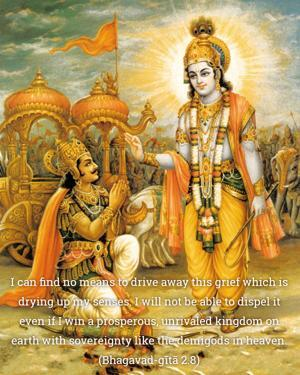
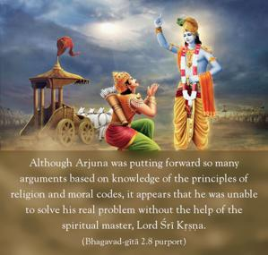

I can find no means to drive away this grief which is drying up my senses. I will not be able to dispel it even if I win a prosperous, unrivaled kingdom on earth with sovereignty like the demigods in heaven.


Although Arjuna was putting forward so many arguments based on knowledge of the principles of religion and moral codes, it appears that he was unable to solve his real problem without the help of the spiritual master, Lord Śrī Kṛṣṇa. He could understand that his so-called knowledge was useless in driving away his problems, which were drying up his whole existence; and it was impossible for him to solve such perplexities without the help of a spiritual master like Lord Kṛṣṇa. Academic knowledge, scholarship, high position, etc., are all useless in solving the problems of life; help can be given only by a spiritual master like Kṛṣṇa. Therefore, the conclusion is that a spiritual master who is one hundred percent Kṛṣṇa conscious is the bona fide spiritual master, for he can solve the problems of life. Lord Caitanya said that one who is a master in the science of Kṛṣṇa consciousness, regardless of his social position, is the real spiritual master.
kibā vipra, kibā nyāsī, śūdra kene naya
yei kṛṣṇa-tattva-vettā, sei ‘guru’ haya
“It does not matter whether a person is a vipra [learned scholar in Vedic wisdom], or is born in a lower family, or is in the renounced order of life – if he is a master in the science of Kṛṣṇa, he is the perfect and bona fide spiritual master.” (Caitanya-caritāmṛta, Madhya 8.128) So without being a master in the science of Kṛṣṇa consciousness, no one is a bona fide spiritual master. It is also said in the Vedic literature:
ṣaṭ-karma-nipuṇo vipro
mantra-tantra-viśāradaḥ
avaiṣṇavo gurur na syād
vaiṣṇavaḥ śva-paco guruḥ
“A scholarly brāhmaṇa, expert in all subjects of Vedic knowledge, is unfit to become a spiritual master without being a Vaiṣṇava, or expert in the science of Kṛṣṇa consciousness. But a person born in a family of a lower caste can become a spiritual master if he is a Vaiṣṇava, or Kṛṣṇa conscious.” (Padma Purāṇa)
The problems of material existence – birth, old age, disease and death – cannot be counteracted by accumulation of wealth and economic development. In many parts of the world there are states which are replete with all facilities of life, which are full of wealth and economically developed, yet the problems of material existence are still present. They are seeking peace in different ways, but they can achieve real happiness only if they consult Kṛṣṇa, or the Bhagavad-gītā and Śrīmad-Bhāgavatam – which constitute the science of Kṛṣṇa – through the bona fide representative of Kṛṣṇa, the man in Kṛṣṇa consciousness.
If economic development and material comforts could drive away one’s lamentations for family, social, national or international inebrieties, then Arjuna would not have said that even an unrivaled kingdom on earth or supremacy like that of the demigods in the heavenly planets would be unable to drive away his lamentations. He sought, therefore, refuge in Kṛṣṇa consciousness, and that is the right path for peace and harmony. Economic development or supremacy over the world can be finished at any moment by the cataclysms of material nature. Even elevation into a higher planetary situation, as men are now seeking on the moon planet, can also be finished at one stroke. The Bhagavad-gītā confirms this: kṣīṇe puṇye martya-lokaṁ viśanti. “When the results of pious activities are finished, one falls down again from the peak of happiness to the lowest status of life.” Many politicians of the world have fallen down in that way. Such downfalls only constitute more causes for lamentation.
Therefore, if we want to curb lamentation for good, then we have to take shelter of Kṛṣṇa, as Arjuna is seeking to do. So Arjuna asked Kṛṣṇa to solve his problem definitely, and that is the way of Kṛṣṇa consciousness.